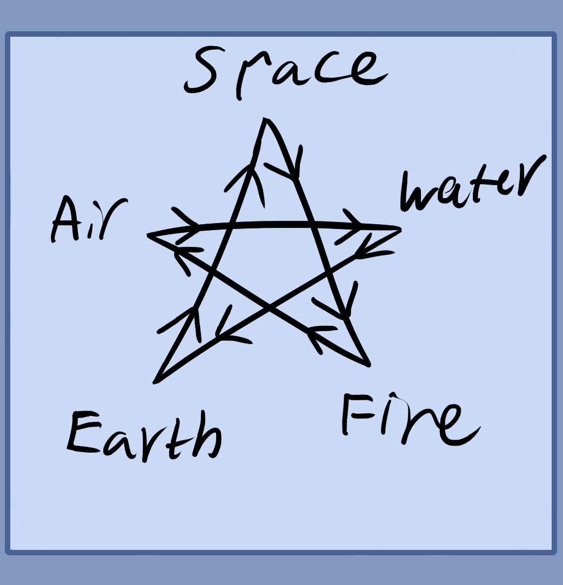

Above is a hierarchy of elements on the right. They are also shown in a cycle with space in the middle. Earth can be replaced with water for the left diagram. Earth is the lowest, this is the base which carries water, then air comes above, finally fire and space which you can think of as electromagnetism. Electromagnetism is hypothetically a pressure dynamic that creates space. High pressure in condensed areas is electrostatic while lower pressure over larger spaces is magnetic.
On the left shows the transformations or cycles of the four elements while space being the area which holds all of them is in the middle. You can also represent these in a pentagram which will be showed later.
Here is a five element uprght pentagram. You can use any number of angled geometry to show ideas or elements. In occultism it can help us to understand and show the flow elements.
The world in its simplest form is made up of these five elements. Earth for all physical things, water for all liquids, air for gases, fire for flames and plasmas, space for 3D space and various fields or pressures. Hence they are the basic building blocks, tools and learning material for you to play with.
If you can properly imagine and use each element, call them into a room psychically and other acts, then you are able to more or less imagine anything.